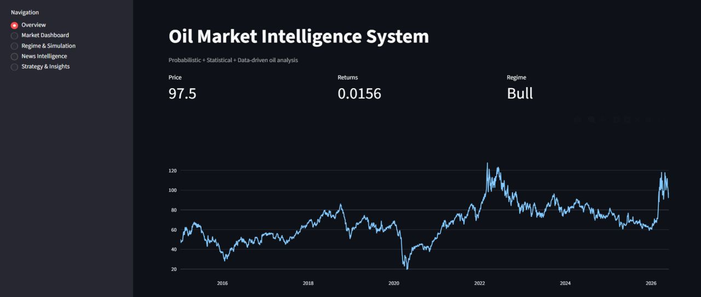
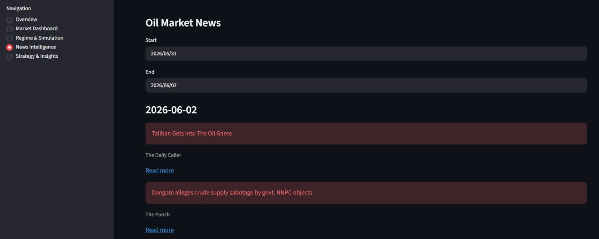

Oil Market Intelligence System
A dashboard that pulls Brent crude prices, OPEC production data and oil-market news into one place. It tracks returns and volatility from 2015 to 2026, labels market regimes with Markov chains, runs Monte Carlo price scenarios and produces a 15-day probabilistic forecast.

